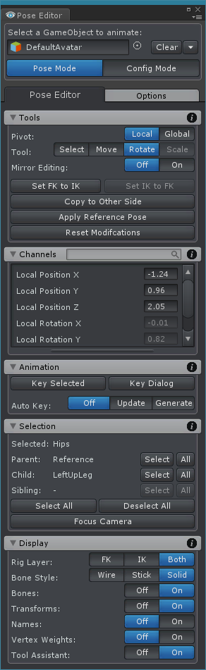
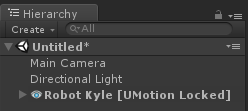

Pose Editor
An animation is a sequence of poses that are stored as so called key frames. When an animation is played, it smoothly interpolates between the defined poses to create a fluid motion. The Pose Editor provides all tools you need to bring the animated GameObject in the different poses and to create the key frames for the animation.
| 
UMotion Pose Editor |
Animated GameObjectWith the topmost field in the Pose Editor, a GameObject that should be animated can be selected. The animated GameObject is used to edit and preview an animation. There are two ways to assign an animated GameObject to the Pose Editor:
The bones and transforms of the animated GameObject need to match to those defined in the current project. When a new empty UMotion project is created and an animated GameObject is selected for the first time, a default configuration for all bones/transforms of that GameObject will be created. Important: While an animated GameObject is assigned to the Pose Editor it is not possible to select any other GameObjects through mouse clicks within the Scene View. In order to select other GameObjects, they need to be selected via Unity's Hierarchy window. GameObjects that are a parent or a child of the animated GameObject can't be selected. By clicking on the Clear button, the animated GameObject will be removed from the Pose Editor and its original state will be restored. Tip: By clicking on the Dropdown arrow next to the Clear button it is possible to remove the GameObject from the Pose Editor but keep the current pose in the scene. UMotion LockWhen an animated GameObject is selected, it automatically gets a component attached called UMotion Lock. This component saves the original state of the GameObject and prepares it for being used with UMotion. Once the animated GameObject field is cleared in the Pose Editor, UMotion Lock is destroyed which automatically restores the original state of the GameObject. Currently locked GameObjects are highlighted in the Unity Hierarchy window: Hierarchy - UMotion Locked A GameObject can be unlocked manually (this may be necessary when UMotion crashes) by selecting the GameObject and click the Unlock button in the inspector of the UMotion Lock component. Edit ModesThe Pose Editor has two edit modes:
To switch between the edit modes, the toggle buttons or the appropriate shortcut can be used. |